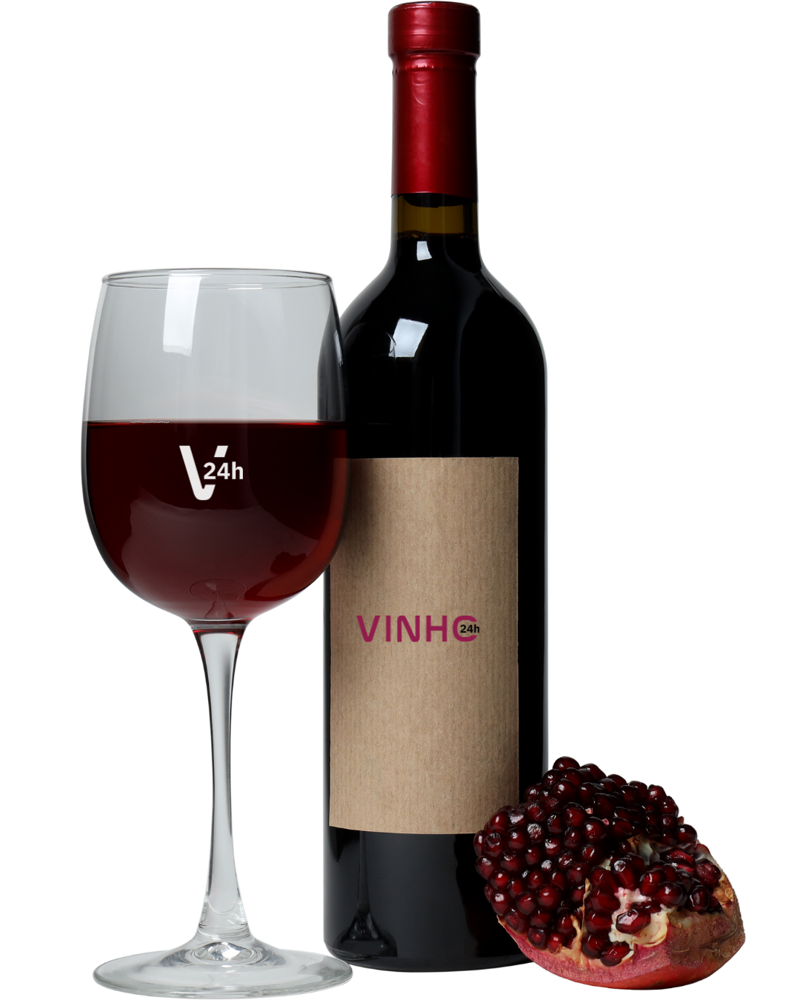

Uma proposta que une praticidade, orientação e acesso a bons rótulos.

A Vinho 24h busca tornar o acesso ao vinho mais simples e prático, aproximando o cliente de uma experiência de compra organizada e acessível.
Com uma seleção variada de rótulos, a proposta é atender diferentes gostos, ocasiões e perfis de consumo, desde momentos cotidianos até celebrações especiais.